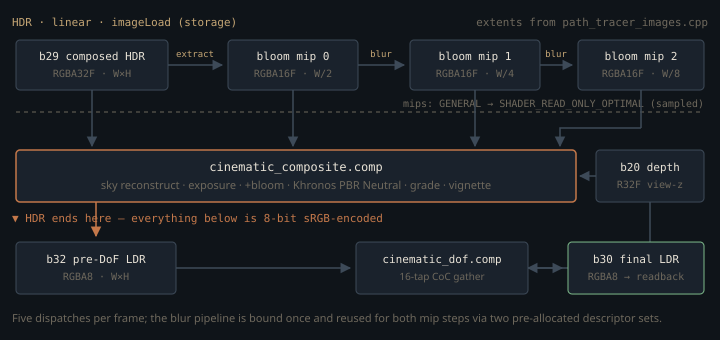

Monograph · Tree · ← Module hub · Cinematic RT post
denoise
Cinematic RT post
Bloom extract/blur, DoF, composite after NRD.
Five dispatches, one consumer
Once NRD's REBLUR outputs have been recombined into a single linear HDR image at binding 29, four compute shaders stand between it and the RGBA8 frame the host reads back: a bloom extract, two downsample-blur steps, a composite that tonemaps, and a depth-of-field gather. Five dispatches from four pipelines — the blur pipeline is created once and reused for both mip steps through two pre-allocated descriptor sets, so nothing is allocated mid-frame.
Read "binding 29", "30" and "32" as the sub-plan nicknames the code comments use for those three images, not as descriptor indices. Inside the cinematic pipelines each is `set = 0`, bindings 0–2; slots 29–34 of the RT descriptor set layout hold ReSTIR GI reservoir planes.
// 29-31: prev reservoir planes 0-2 (read) 32-34: curr reservoir planes 0-2 (write)ohao/render/rt/path_tracer_descriptors.cpp:191Only surface pixels pass through binding 29. The composite reads the depth AOV first and, where the primary ray missed, rebuilds a world-space direction from the pixel centre and samples the environment map instead — background pixels never touch the denoised image at all:
hdr = sampleEnv(normalize(world.xyz));shaders/rt/cinematic_composite.comp:156The gating repays a second reading. The outer condition is not the denoiser the user asked for, but whether an NRD instance came up and the auxiliary AOVs are being written:
if (m_nrdDenoiser && m_renderSettings.enableAuxiliaryAOVs) {ohao/render/rt/path_tracer_render.cpp:869That block gates REBLUR. Two sibling blocks sit inside it: `if (m_nrdCompositor)` runs the remodulation pass that produces binding 29 in the first place, and a second guards the five dispatches described here. Both objects are constructed unconditionally at startup and cleared only if `initialize` fails, so both are really did-the-pipelines-compile checks:
if (m_cinematicPost) {ohao/render/rt/path_tracer_render.cpp:994Both shipped RT profiles set `enableAuxiliaryAOVs = true`, so on a machine where NRD initialises these five dispatches also execute during an `--denoise=oidn` render — while only `DenoiseMode::NRD` reads binding 30 back on the normal readback path:
if (m_denoiseMode == DenoiseMode::NRD) {ohao/gpu/vulkan/renderer.cpp:715Everything below therefore describes the picture the NRD path produces; in the other modes it is work whose result is discarded.

Bloom before the curve, defocus after it
Veiling glare is a light-transport artefact — scatter inside the lens barrel scales with scene radiance — so it must be summed while the signal is linear and unbounded. The extract reads binding 29 as `rgba32f`, the blur chain lives in `RGBA16F`, and the composite adds the result in the statement immediately before the tone curve:
hdr += bloom * pc.bloomStrength;shaders/rt/cinematic_composite.comp:166Depth of field went the other way. Since sub-plan 4.J the composite no longer writes the final image; it writes an RGBA8 intermediate at binding 32 that the DoF gather consumes:
ci.tonemappedOut = m_preDofLdrView; // 4.J: write pre-DoF, not finalohao/render/rt/path_tracer_render.cpp:1127That ordering is deliberate and lossy: after the curve a clipped highlight has already been compressed toward 1.0, so its bokeh disc carries the energy of white paper rather than of the light source. Doing it physically needs a second full-resolution RGBA32F target and a second tonemap dispatch; the chain takes that saving and accepts flat bokeh.
The knee that stops highlights from popping
The extract must isolate the bright part. The thresholded quantity is the max channel, $b=\max(c_r,c_g,c_b)$ — not luminance. A hard `max(b - T, 0)` is not actually discontinuous: the scale it applies tends to zero as $b\to T^{+}$, so a pixel drifting across the threshold fades in rather than pops. What it is not is smooth — its slope jumps from 0 to 1 at $b=T$ — and its onset is pinned to exactly $T$ with no way to widen it. Karis's soft knee fixes both. With threshold $T$ and knee half-width $k$, the scale applied to the colour is
float contrib = max(soft, br - thresh) / max(br, 1e-4);shaders/rt/cinematic_bloom_extract.comp:40Both $\epsilon$ are the same $10^{-4}$ divide guard the code carries. Up to that guard the branches are built to meet: at $b=T+k$ the quadratic evaluates to $k$, which is also $b-T$, so $w$ and its first derivative are continuous there, and the quadratic reaches zero slope at $b=T-k$. Below $T-k$ nothing is extracted; above $T+k$ the response is the plain linear excess. The host pushes $T=1.0$ and $k=0.5$, so the knee spans max-channel values 0.5 to 1.5.
The 2×2 downsample in the same pass carries a separate trade. A plain average preserves energy but lets one firefly survive into the widest mip as a large soft disc; Karis's $1/(1+L)$ luminance-weighted average kills the firefly and darkens real bright clusters with it. That $L$ is Rec.709 luma — the file's only use of its `luma()` helper, which the threshold above deliberately does not call. The shader computes both and splits the difference:
vec3 sampled = mix(avg, weighted, 0.5);shaders/rt/cinematic_bloom_extract.comp:70That fixed 0.5 is the honest description of this pass: neither energy-conserving nor firefly-proof, half of each.
Thirteen taps, and the half texel a storage image cannot reach
The blur is the Jimenez 13-tap downsample from *Next Generation Post-Processing in Call of Duty: Advanced Warfare* — one inner 2×2 box at weight 0.5 plus four overlapping outer boxes at 0.125, coefficients summing to one, so each level halves resolution and widens the kernel without a separable ping-pong pair:
sum += (d + e + i + j) * (0.5 / 4.0);shaders/rt/cinematic_bloom_blur.comp:77The interesting deviation is where the tap grid is centred. A destination pixel covers source texels $2d$ and $2d+1$, whose common centre is texel coordinate $2d+0.5$. The shader centres its symmetric $\pm1,\pm2$ pattern on the integer texel instead:
ivec2 c = dst * 2;shaders/rt/cinematic_bloom_blur.comp:40It has no choice: the source mip is bound here as a storage image — `readonly image2D`, read with `imageLoad`, which takes integer coordinates — so there is no filtering unit to reach a half-texel centre with. (The destination is `writeonly`; only the read side constrains the tap grid.) The result is a half-source-texel shift up-left per level, one and two full-resolution pixels at mips 1 and 2: invisible inside a kernel that wide, but a real registration error if these mips are ever reused for something sharper. The composite binds the same three images as `sampler2D` because upsampling does need bilinear interpolation — which is why the frame must flip all three out of `GENERAL` first:
mipsToRead[mip].newLayout = VK_IMAGE_LAYOUT_SHADER_READ_ONLY_OPTIMAL;ohao/render/rt/path_tracer_render.cpp:1095The tonemap the file's own header does not describe
`cinematic_composite.comp` opens by announcing AgX and carries Sobotka's inset and outset matrices, the paired log-range constants, and the 6th-order contrast polynomial. None of it runs. The `agx()` function has no caller in the file, and `AgX_outset` is never referenced at all:
vec3 agx(vec3 col) {shaders/rt/cinematic_composite.comp:110What executes in `main` is Khronos PBR Neutral, and it does not leave the low end alone. Every pixel first has a single offset subtracted from all three channels — a quadratic toe derived from the *minimum* channel, rising to a constant 0.04 once that channel clears 0.08:
float offset = x < 0.08 ? x - 6.25 * x * x : 0.04;shaders/rt/cinematic_composite.comp:179Only then is the peak tested against the knee, and the uncompressed branch returns the *offset* colour, not the input. A linear 0.5 grey therefore leaves the tonemapper at 0.46. That saturated toe is also why the knee is spelled `0.8 - 0.04` rather than 0.76: for a neutral pixel, compression starts at an input of 0.8. Above it the peak channel is pulled toward 1.0 along a hyperbola, desaturating only in proportion to the compression it just applied:
float newPeak = 1.0 - d * d / (peak + d - startCompression);shaders/rt/cinematic_composite.comp:187The sky does not come through untouched either. The same dispatch site that pushes the neutral grade also doubles the environment map for the miss pixels the composite re-samples, on the stated grounds that it makes the background "read brighter" — a deliberate, unphysical 2× on every background pixel, and the same switch that renders the background black when no environment is bound:
ci.envIntensity = (m_envCDFIntegral > 0.0f && m_envMapView) ? 2.0f : 0.0f;ohao/render/rt/path_tracer_render.cpp:1143AgX survived six revisions before v7 replaced it. The change note at the dispatch site says it was "stylizing greys toward magenta + over-crushing midtones" — it names no matrix; the only place in the tree that blames a matrix for the magenta is the composite shader's own comment, and it points at the *outset*, not the inset. {{cite ohao/render/rt/path_tracer_render.cpp "// v7 — REPLACED AgX with Khronos PBR Neutral tonemap in shader."}} {{cite shaders/rt/cinematic_composite.comp "magenta via outset matrix"}} v7 is credited with the exposure, bloom and vignette values; the grade was already neutral before it. The tint went two revisions earlier, in v4, and the note there is explicit that AgX was still the tonemapper at the time: {{cite ohao/render/rt/path_tracer_render.cpp "// v4: neutral-tint variant. v3's warm tint compounded with AgX's"}} For an asset-visualisation renderer the right default is a curve that does nothing to hue, not a film emulation. What ships — neutral grade, exposure 1.0, 0.25 bloom, 0.15 vignette — has no look of its own, with one deliberate exception: the 2× sky.
Circle of confusion, gathered
The DoF pass reads the view-space depth AOV (binding 20, `R32F`, sky written as `1e30` by the raygen) and converts it to a blur radius in pixels:
where $z$ is view-space depth, $f$ the focus distance, $A$ the `aperture` push constant and $C_{\max}$ the pixel cap — 32 at the shipping call site.
return clamp(defocus * pc.aperture, 0.0, pc.maxCoCPixels);shaders/rt/cinematic_dof.comp:59A thin lens gives $\mathrm{CoC}\propto|z-f|/z$; dropping the $1/z$ makes the ramp symmetric about the focal plane, where a real lens blurs near foreground harder than equally-defocused background. Focus distance is not authored — it is recomputed each frame as the camera's distance to the world origin, on the assumption that the framed model sits there:
float focusDist = glm::length(camPos); // distance to world origin (where model sits)ohao/render/rt/path_tracer_render.cpp:1214With a floor under it: inside half a unit of the origin the derived distance is discarded and focus snaps to a hard-coded 8 m, so a camera pushed into the model focuses on nothing in particular.
di.focusDistance = focusDist > 0.5f ? focusDist : 8.0f;ohao/render/rt/path_tracer_render.cpp:1215Sky is the case worth reading. `1e30` would saturate the formula to $C_{\max}$, which is what the pass used to do, and an infinitely defocused background smeared black halos into subject silhouettes. So miss depths never reach the formula at all — they short-circuit to 8 pixels at the shipping cap:
return min(pc.maxCoCPixels * 0.4, 8.0);shaders/rt/cinematic_dof.comp:55The gather is the usual scatter-as-gather inversion: a tap contributes only if its *own* circle of confusion is wide enough to reach the gathering pixel, which is what stops a sharp foreground from bleeding onto a blurred background.
float w = smoothstep(taprad - 0.5, taprad + 0.5, sampleCoC);shaders/rt/cinematic_dof.comp:87Two limits are implementation, not theory. The sample footprint is scaled by the *centre* pixel's CoC:
vec2 offset = kPoissonDisk[i] * centerCoC;shaders/rt/cinematic_dof.comp:75so an in-focus pixel has zero radius and can never receive light from an out-of-focus foreground object in front of it — the one direction of bleed a real lens does produce. And sixteen taps thinly cover a 32-pixel disc, on a table that is not symmetric: the outer unit ring has $(0.5,0.866)$, $(-0.5,0.866)$ and $(-0.5,-0.866)$ but no fourth-quadrant partner.
vec2(-0.500, -0.866)shaders/rt/cinematic_dof.comp:45The residual first moment of the raw table is one unit vector. The weights do not rescue it, but they do shrink it. In a uniformly defocused region every tap sees `sampleCoC == centerCoC`, so a tap at table radius $|v|$ gets `smoothstep(|v|C - 0.5, |v|C + 0.5, C)` — and the three uncancelled taps sit at $|v|=1$, exactly the midpoint of their own smoothstep, so they weigh 0.5, not 1. At the shipping cap $C=32$ the centre, the four $|v|\approx0.47$ taps and the four $|v|=0.95$ taps weigh 1, the four $(\pm0.7,\pm0.7)$ diagonals weigh $\approx0.92$, and the sum is $\approx14.2$. The centroid therefore sits $0.5C/14.2 \approx 0.035\,C$ off centre — about one pixel at $C=32$. Small, but a bias rather than noise: it does not average out.
The chain has exactly one HDR→LDR boundary and it sits inside `cinematic_composite.comp`. Bloom is summed on the linear side because glare scales with radiance; depth of field is gathered on the 8-bit side because that saved a second full-resolution float target. Whatever looks wrong about OHAO's bokeh energy follows from which side of that line each effect landed on.
Contracts
- Bloom mips must be `GENERAL` for extract and blur (storage writes) and `SHADER_READ_ONLY_OPTIMAL` for the composite (sampled reads). Both transitions are issued by the caller in `path_tracer_render.cpp`, not by `NrdCinematicPost`.
- The two blur dispatches share a pipeline but must not share a descriptor set. Both are recorded into one command buffer, and `dispatchBloomBlur` rewrites its set immediately before binding it, so collapsing `blurSets[0]` and `blurSets[1]` into one would have the second update clobber descriptors the first dispatch has not executed against yet. The `slot` argument is what keeps them apart: the caller passes `mip - 1`, so slot 0 is mip0→mip1 and slot 1 is mip1→mip2.
- The composite writes binding 32, never binding 30. Only the DoF pass writes binding 30, and binding 30 is the only image the frame loop reads back — binding 29 is reachable, but only through `env_demo`'s `--dump-nrd-composed` debug flag. Skipping the DoF dispatch leaves the previous frame's contents in binding 30, not an un-defocused image.
- Mip extents are derived twice with the same `(n + 1) / 2` rounding, by `PathTracer` when allocating and again inside `NrdCinematicPost::initialize`. For the mips only `PathTracer`'s copy matters — extract and blur take `dstW`/`dstH` as arguments, so `bloomW0..bloomH2` feed nothing but the startup log. The stored `width`/`height` are different: `dispatchComposite` and `dispatchDoF` build their 8×8 grids from them, so those two dispatches are sized by whatever `initialize` was handed, not by their arguments.
I.width = width;ohao/render/rt/denoise/nrd_cinematic.cpp:434- What `initialize` is handed is the *output* resolution, while every image in the chain — bindings 29, 30, 32 and all three bloom mips — is allocated at the *render* resolution. They match in every mode that renders 1:1, and where they diverge the render res is the smaller, so the composite and DoF over-dispatch and the shaders' `imageSize` bounds test discards the surplus. That direction is the invariant: an image larger than the extent `initialize` received would leave its far edge unwritten.
Source files
ohao/render/rt/path_tracer_descriptors.cppshaders/rt/cinematic_composite.compohao/render/rt/path_tracer_render.cppohao/gpu/vulkan/renderer.cppshaders/rt/cinematic_bloom_extract.compshaders/rt/cinematic_bloom_blur.compshaders/rt/cinematic_dof.compohao/render/rt/denoise/nrd_cinematic.cppParent hub for the full pipeline narrative; this page is the file-level design unit. Sitemap · hover glossary terms anywhere.